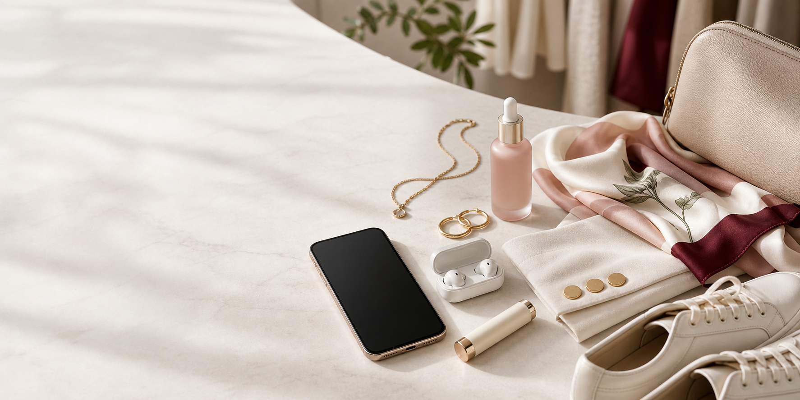

The soft blazer formula
Wear a cream or taupe blazer with a ribbed knit, straight denim, and one burgundy or gold accent. It looks polished without feeling corporate.

The modern edit
Moda Selection helps you build better outfits, calmer beauty routines, cleaner shoes, and a more useful everyday carry without buying more than you need.
The edits
Fashion is the center of the site, but the real promise is broader: looking pulled together, buying with intention, and avoiding objects that only look good for a week.
Style notes
A short edit of ideas that make daily dressing, beauty, and work-bag organization feel a little more considered.
Wear a cream or taupe blazer with a ribbed knit, straight denim, and one burgundy or gold accent. It looks polished without feeling corporate.
Keep the products you actually use at eye level: cleanser, moisturizer, sunscreen, and one treatment. Everything else can earn its place slowly.
A slim charger, earbuds, one cable, and a small pouch can make a handbag feel more organized than adding another gadget.
Deep reads
Style, beauty, shoes, and everyday tech advice for the small choices that make a routine feel easier.
 StyleHow to make simple outfits look more expensive
StyleHow to make simple outfits look more expensiveA practical guide to fit, texture, color, accessories, and outfit restraint.
 StyleCapsule wardrobe mistakes that make getting dressed harder
StyleCapsule wardrobe mistakes that make getting dressed harderWhy too many basics, wrong colors, and poor fabric choices can flatten your style.
 StyleHow to make simple outfits look intentional
StyleHow to make simple outfits look intentionalA practical guide to fit, layers, texture, and color balance.
 ShoesWhite sneakers: styling tips and mistakes to avoid
ShoesWhite sneakers: styling tips and mistakes to avoidHow to choose shape, color, trouser length, and care habits.
 ShoesHow to keep sneakers looking clean without overthinking it
ShoesHow to keep sneakers looking clean without overthinking itA simple maintenance routine for leather, mesh, suede-like finishes, and laces.
 BeautySkincare beginner mistakes that waste money
BeautySkincare beginner mistakes that waste moneyWhat to keep simple, what to add slowly, and what claims to treat carefully.
 BeautySkincare layering order: a simple way to think about texture
BeautySkincare layering order: a simple way to think about textureA non-medical guide to cleanser, moisturizer, sunscreen, serums, and comfort.
 GearWhen a new gadget launches, what should you check first?
GearWhen a new gadget launches, what should you check first?Battery, compatibility, comfort, repairability, and whether the upgrade changes your day.
 GearSmall desk tech upgrades that make work feel calmer
GearSmall desk tech upgrades that make work feel calmerCharging, audio, lighting, cable control, and the objects worth keeping within reach.
Selected objects
A rotating edit of practical pieces for getting dressed, staying organized, caring for shoes, and keeping beauty simple.
Some shopping links may support Moda Selection. See Disclosure.
Loading curated picks...